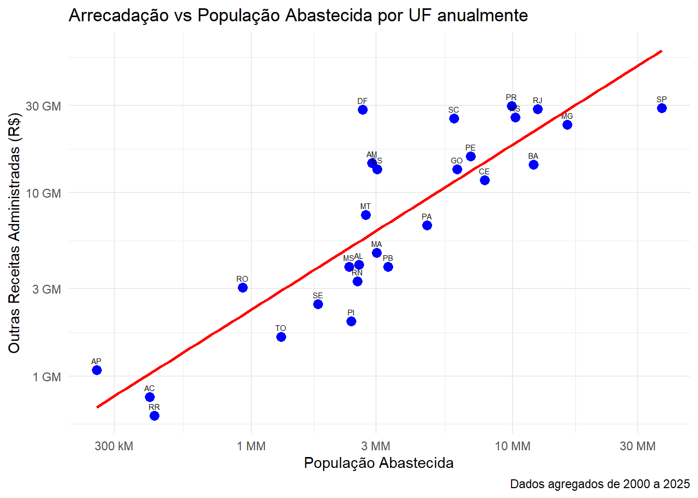

# Carregar pacotes necessários (sem mensagens ou warnings no HTML)
suppressPackageStartupMessages(suppressWarnings({
library(readr)
library(dplyr)
library(ggplot2)
library(scales)
}))Projeto Integração de Dados
Code
Carregar pacotes
Ler bases de dados
# Ler ficheiro de arrecadação (com supressão de mensagens de parsing)
arrecadacao <- suppressMessages(
read_csv2("dataset/Arrecadação por UF.csv",
# resolve problemas com caractéres especiais (ç, ã, é, etc.)
locale = locale(encoding = "Latin1"),
# omite a mensagem de tipos de colunas detectados
show_col_types = FALSE)
)
# Ler ficheiro de população abastecida
sisagua <- suppressMessages(
read_csv2("dataset/cadastro_populacao_abastecida.csv",
locale = locale(encoding = "Latin1"),
show_col_types = FALSE)
)
# Converter coluna "OUTRAS RECEITAS ADMINISTRADAS" para numérico
arrecadacao <- arrecadacao %>%
mutate(`OUTRAS RECEITAS ADMINISTRADAS` = parse_number(`OUTRAS RECEITAS ADMINISTRADAS`))Agregar e integrar bases (join)
# group_by(UF, Ano) -> agrupa os dados por estado e por ano
# soma as receitas dos vários meses do ano
arrec_anual <- arrecadacao %>%
group_by(UF, Ano) %>%
summarise(
OUTRAS_RECEITAS_ANO = sum(`OUTRAS RECEITAS ADMINISTRADAS`, na.rm = TRUE),
.groups = "drop"
) %>%
# garante que não ficam grupos ativos
ungroup()
# Calcular a média anual de arrecadação por UF
# calcula a média das receitas anuais (todos os anos analisados)
arrec_agregado <- arrec_anual %>%
group_by(UF) %>%
summarise(
OUTRAS_RECEITAS = mean(OUTRAS_RECEITAS_ANO, na.rm = TRUE)
)
#group_by(UF, `Ano de referência`) -> agrupa os dados por estado e por ano
# soma a população estimada dos vários munícipios da UF
sisagua_anual <- sisagua %>%
group_by(UF, `Ano de referência`) %>%
summarise(
POP_ANO = sum(`População estimada`, na.rm = TRUE),
.groups = "drop"
) %>%
ungroup()
# Calcular a média anual da população abastecida por UF
# calcula a média da população abastecida (todos os anos analisados)
sisagua_agregado <- sisagua_anual %>%
group_by(UF) %>%
summarise(
POP_ESTIMADA = mean(POP_ANO, na.rm = TRUE)
)
# Integrar os dois datasets pelo identificador comum "UF"
# left_join -> mantém todos os estados da arrecadação
# filter(!is.na(...)) -> garante valores ausentes não são contabilizados
dados_integrados <- left_join(arrec_agregado, sisagua_agregado, by = "UF") %>%
filter(!is.na(POP_ESTIMADA) & !is.na(OUTRAS_RECEITAS))Para representar a arrecadação por UF, utilizou-se a variável OUTRAS RECEITAS ADMINISTRADAS, assumindo-a como uma aproximação proporcional do total de receitas. Já a variável POPULAÇÃO ESTIMADA abastecida foi escolhida como medida comparável entre UFs, refletindo a dimensão da população efetivamente abrangida pelo sistema de abastecimento.
Criar Gráfico
# Criar gráfico scatter com supressão de mensagens irrelevantes
suppressMessages(
ggplot(dados_integrados, aes(x = POP_ESTIMADA, y = OUTRAS_RECEITAS)) +
# Cada ponto azul representa uma UF (estado)
geom_point(color = "blue", size = 3) +
# Adiciona a sigla da UF junto a cada ponto
geom_text(aes(label = UF), vjust = -1, hjust = 0.5, size = 2) +
# Adiciona uma linha de regressão linear (reta de tendência)
# formula = y ~ x -> define explicitamente a relação para não aparecer o "Info"
geom_smooth(method = "lm", formula = y ~ x, se = FALSE, color = "red") +
# Títulos e legendas dos eixos
labs(
title = "Arrecadação vs População Abastecida por UF anualmente",
x = "População Abastecida",
y = "Outras Receitas Administradas (R$)",
caption = "Dados agregados de 2000 a 2025"
) +
# Escalas logarítmicas nos dois eixos
# cut_si -> usa notação curta (K = mil, M = milhão, B = bilhão, T = trilhão)
scale_x_log10(labels = scales::label_number(scale_cut = scales::cut_si("M"))) +
scale_y_log10(labels = scales::label_number(scale_cut = scales::cut_si("M"))) +
# Tema minimalista para aspeto visual mais limpo
theme_minimal()
)
Interpretação do Gráfico
O gráfico apresenta a relação entre a média anual da população abastecida (eixo X) e média anual das outras receitas administradas(R$) (eixo Y), entre 2000 e 2025 . Ambos os eixos estão em escala logarítmica, representados em K = mil, M = milhão, B = Bilhão, o que permite comparar grandezas muito diferentes de forma proporcional.
A linha vermelha representa a reta de regressão linear ajustada aos dados: ou seja, a tendência média da relação entre população e receitas. O facto de a reta ter inclinação positiva confirma a correlação positiva: estados com maior população abastecida tendem, em média, a apresentar maior arrecadação.
A dispersão dos pontos em torno da linha mostra o desvio em relação ao padrão esperado. Quanto mais distante um ponto estiver da linha, maior a discrepância entre a arrecadação real e a prevista pela relação populacional.
Estados muito acima da linha, como DF, arrecadam mais do que seria esperado para a sua população, o que pode refletir fatores administrativos, maior peso de receitas específicas ou particularidades socioeconómicas.
Estados mais abaixo da linha, como PI, apresentam arrecadação menor do que a esperada, sugerindo limitações na capacidade de gerar receitas em proporção ao tamanho da população abastecida.
São Paulo (SP) destaca-se como o estado mais à direita e no topo do gráfico: possui a maior população abastecida e também a maior arrecadação, relativamento alinhado com a tendência geral.
No extremo inferior esquerdo, Amapá (AP), Acre (AC) e Roraima (RR) concentram-se como estados de menor população abastecida e baixa arrecadação, posicionando-se próximos da base da reta. Estes casos ilustram a dimensão reduzida destas UFs no contexto nacional.
Code
Cálculo percentagem canalização e arrecadação por município
# Calcular percentagem de canalização no RJ nos anos de referência
perc_canalizada_RJ <- sisagua %>%
filter(UF == "RJ" & `Ano de referência` %in% c(2014 ,2016, 2018 ,2020 ,2024)) %>%
# Remover linhas com NA na coluna Canalização
filter(!is.na(Canalização)) %>%
group_by(`Ano de referência`) %>%
summarise(
# mean(Canalização == "Sim") conta proporção de "Sim" e converte para percentual
perc_canalizada = mean(Canalização == "Sim", na.rm = TRUE) * 100
)
# Filtra dados de arrecadação para RJ nos anos de referência
arrecadacao_RJ <- arrecadacao %>%
filter(UF == "RJ" & Ano %in% c(2014, 2016, 2018, 2020, 2024)) %>%
mutate(
IRPF_numeric = suppressWarnings(
# Remove caracteres não numéricos (R$, pontos, espaços) mantendo vírgula decimal
as.numeric(gsub("[^0-9,]", "", IRPF))
)
) %>%
filter(!is.na(IRPF_numeric)) %>%
group_by(Ano) %>%
summarise(
# Calcular receita média do IRPF por ano
receita_media_IRPF = mean(IRPF_numeric, na.rm = TRUE)
)Agregar e Integrar dados
# Combina dados de canalização e arrecadação usando left_join
dados_RJ <- left_join(
perc_canalizada_RJ,
arrecadacao_RJ,
by = c("Ano de referência" = "Ano")
)Para representar a arrecadação do estado do Rio de Janeiro, utilizou-se a variável IRPF (Imposto de Renda da Pessoa Física) da base de dados arrecadaçao, que reflete diretamente a capacidade contributiva da população e o nível de formalização do mercado de trabalho no estado.
Já a variável canalização da base de dados sisagua foi escolhida como indicador do desenvolvimento da infraestrutura básica de saneamento, sendo usada para calcular a percentagem de municípios que possuem sistema de canalização na distribuição de água, em contraste com outras alternativas de abastecimento.
Criar Gráfico
# Criar gráfico de dispersão com linha temporal
ggplot(dados_RJ, aes(x = perc_canalizada, y = receita_media_IRPF, label = `Ano de referência`)) +
# Pontos do gráfico de dispersão
geom_point(color = "blue", size = 3) +
# Linha conectando os pontos em ordem temporal (group = 1 força uma única linha)
geom_line(aes(group = 1), color = "red") +
# Rótulos com os anos próximos aos pontos
geom_text(vjust = -1, hjust = 0.5) +
# Define que o eixo x vai de 0% a 100%
scale_x_continuous(limits = c(0, 100)) +
# Formata os números do eixo y automaticamente (K para milhares, M para milhões, etc.)
scale_y_continuous(
labels = scales::label_number(
scale_cut = scales::cut_short_scale() # K, M, B, T automaticamente
),
limits = c(0, max(dados_RJ$receita_media_IRPF) * 1.1)
) +
# Personalização de rótulos e títulos
labs(
title = "Arrecadação IRPF vs Água Canalizada no RJ",
x = "Percentagem de municípios com água canalizada (%)",
y = "Média de Receita IRPF mensal do RJ (R$)",
caption = "Anos analisados: 2014, 2016, 2018, 2020, 2024"
) +
# Tema minimalista para aspeto visual mais limpo
theme_minimal()Interpretação do Gráfico
O gráfico apresenta a relação entre a percentagem de municípios com água canalizada (eixo X) e a média de receita do IRPF mensal (eixo Y) no estado do Rio de Janeiro, nos anos de 2014, 2016, 2018, 2020 e 2024. O eixo Y está representado numa escala abreviada (M = milhão, B = bilhão), permitindo visualizar a evolução de valores financeiros de grande magnitude.
A linha vermelha representa a evolução temporal da relação entre as duas variáveis, mostrando a tendência geral ao longo dos anos analisados. A inclinação positiva da linha confirma uma correlação positiva entre as variáveis: à medida que aumenta a arrecadação média do IRPF do RJ, tende a aumentar também a percentagem de municípios com água canalizada.
Os valores relativamente baixos de percentagem de canalização (entre aproximadamente 20% e 45%) refletem a realidade do estado do Rio de Janeiro, onde muitos municípios, especialmente em zonas rurais e periféricas, utilizam formas alternativas de acesso à água como chafarizes, poços, carro-pipa, fontes, cisternas e caixas d’água, em vez de sistemas de canalização convencionais.
A forte correlação observada sugere que o desenvolvimento da infraestrutura básica de saneamento (representada pela canalização de água) pode estar associado a melhorias socioeconómicas que se refletem no aumento da arrecadação do imposto de renda, possivelmente indicando maior formalização do trabalho, melhores rendimentos da população e fortalecimento da atividade econômica no estado.
Glossário de Variáveis
arrecadação
Variável em que está guardada a base de dados inicial nomeada “Arrecadação por UF.csv”. Tem 47 variáveis (colunas) e 8290 observações (linhas).
sisagua
Variável em que está guardada a base de dados inicial nomeada “cadastro_populacao_abastecida.csv”. Tem 37 variáveis (colunas) e 1720737 observações (linhas).
UF
Variável de ambas as bases de dados arrecadação e sisagua. Foi usada para agregação e integração de novas bases de dados.
Ano ou Ano de Referência
Variáveis (colunas) das bases arrecadaçao e sisagua, respetivamente. Foram usadas para agregação e integração de novas bases de dados.
OUTRAS RECEITAS ADMINISTRADAS
Variável da base de dados arrecadação que representa o valor em reais (R$) das receitas adicionais mensais por UF.
OUTRAS_RECEITAS_ANO
Variável criada para a base de dados arrec_anual. Contém a soma de todos os valores OUTRAS RECEITAS ADMINISTRADAS por UF nos vários anos analisados em arrecadação (2000- 2025).
arrec_anual
Base de dados que contém: UF, ano, e OUTRAS_RECEITAS_ANO.
OUTRAS_RECEITAS
Variável criada para a base de dados arrec_agregado e posteriormente dados_integrados. Representa a média anual de todos os valores OUTRAS_RECEITAS_ANO por UF (dos anos em análise: 2000- 2025).
arrec_agregado
Base de dados que contém: UF, OUTRAS_RECEITAS.
População_estimada
Variável da base de dados sisagua que contém o número de pessoas abastecidas com água por municío por UF.
POP_ANO
Variável criada para a base de dados sisagua_anual. Contém a soma de todos os valores da variável População_estimada nos vários anos analisados em sisagua (2000- 2025).
sisagua_anual
Base de dados que contém: UF, Ano de referência e POP_ANO.
POP_ESTIMADA
Variável criada para a base de dados sisagua_agregado e posteriormente dados_integrados. Representa a média anual de todos os valores POP_ANO por UF (dos anos em análise: 2000- 2025).
sisagua_agregado
Base de dados que contém: UF e POP_ESTIMADA.
dados_agregados
Base de dados que contém: UF, OUTRAS_RECEITAS e POP_ESTIMADA.
Canalização
Variável da base de dados sisagua que indica se a localidade possui canalização (“Sim”, “Não”, NA). Foi utilizada para calcular a percentagem de localidades canalizadas.
perc_canalizada
Variável criada para a base de dados perc_canalizada_RJ. Representa a percentagem anual de localidades com canalização (“Sim”) nos anos 2014, 2016, 2018, 2020, 2024 no Rio de Janeiro.
perc_canalizada_RJ
Base de dados criada que contém: Ano de referência e perc_canalizada.
IRPF
Variável da base de dados arrecadação que contém o valor arrecadado do Imposto de Renda da Pessoa Física por UF, originalmente em formato de texto com caracteres especiais.
IRPF_numeric
Variável que representa o valor numérico do IRPF após limpeza dos caracteres especiais e conversão para formato numérico.
receita_media_IRPF
Variável criada para a base de dados arrecadacao_RJ. Representa a média anual dos valores IRPF_numeric nos anos 2014, 2016, 2018, 2020, 2024 no Rio de Janeiro.
arrecadacao_RJ
Base de dados criada que contém: Ano e receita_media_IRPF.
dados_RJ
Base de dados que contém: Ano de referência, perc_canalizada e receita_media_IRPF.